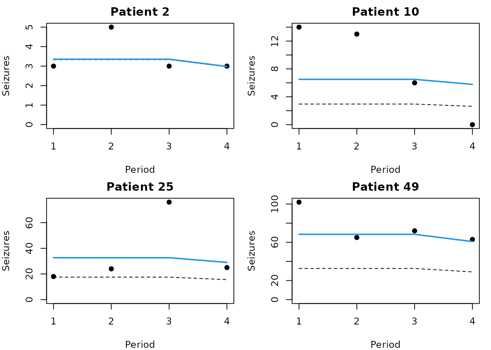

Predicting new units and known units in panel data
Source:vignettes/prediction-for-panel-data.Rmd
prediction-for-panel-data.RmdWith repeated measurements of the same units, “the prediction” can mean several things: the expected count for a new unit, a summary for a unit whose outcomes have been seen, or a forecast of a known unit’s next observation. They condition on different information and must be evaluated differently. This vignette fits a random-intercept model to a clinical trial and shows which of these targets flexCountReg supports.
Data: seizure counts
MASS::epil records the number of epileptic seizures of
59 patients in a trial of the drug progabide (Thall and Vail, 1990), in
the corrected version of the MASS package (?MASS::epil
describes the correction). Each patient has four rows, one per two-week
follow-up period; the count in the eight-week baseline period before
treatment is a covariate (base, and lbase, the
log of a quarter of it, centred), not a response, so it is not
duplicated as an observation.
The model
Each patient has a random intercept shared by their four periods , and given the counts are NB2 with mean
The intercept is in rpar_formula and removed from
formula, so the treatment enters as a 0/1 variable rather
than a factor with both levels. group_var = "subject" makes
the four rows of a patient share one draw:
fe <- y ~ -1 + progabide + lbase + lage + V4
rp <- countreg_rp(fe, rpar_formula = ~ 1, data = epil, family = "NB2",
group_var = "subject", ndraws = 200, method = "BFGS")
rp$model$converged
#> [1] TRUE
round(summary(rp)$coefficients[, 1:2], 3)
#> Estimate Std. Error
#> progabide -0.315 0.150
#> lbase 1.028 0.101
#> lage 0.328 0.348
#> V4 -0.118 0.087
#> (Intercept):Mean 1.850 0.109
#> (Intercept):St.Dev 0.491 0.061
#> ln(alpha) -2.008 0.236The coefficients are effects on the log of the expected count
given the patient’s intercept. The standard deviation of the
intercept ((Intercept):St.Dev) measures how much patients
with the same covariates differ in their seizure rates.
Prediction targets
| Target | Conditions on | flexCountReg |
|---|---|---|
| Expected count of a new patient | covariates only |
predict(method = "Exact") or
"Simulated"
|
| Summary of a patient whose counts were observed | covariates and that patient’s observed counts |
predict(method = "Individual") (Empirical Bayes) |
| Forecast of a known patient’s later period | covariates and that patient’s earlier counts only | not available for random-parameter models (see below) |
For one patient:
p1 <- epil[epil$subject == 1, ]
data.frame(period = p1$period, y = p1$y,
new_patient = predict(rp, newdata = p1, method = "Exact"),
simulated = predict(rp, newdata = p1, method = "Simulated"),
empirical_bayes = predict(rp, newdata = p1, method = "Individual"))
#> period y new_patient simulated empirical_bayes
#> 1 1 5 3.420274 3.389338 3.380582
#> 2 2 3 3.420274 3.389338 3.380582
#> 3 3 3 3.420274 3.389338 3.380582
#> 4 4 3 3.038680 3.011196 3.003416Exact integrates over the random intercept with its
moment-generating function; Simulated averages over the
Halton draws and differs from it by the simulation error. Both describe
a new patient with these covariates. Individual
weights each draw of the intercept by the likelihood of the patient’s
four observed counts; it describes this patient, and it uses their
outcomes.
A patient identifier that was not in the training data does not matter for the population prediction, which uses the covariates only:
p_new <- p1
p_new$subject <- 999
all.equal(predict(rp, newdata = p_new, method = "Exact"),
predict(rp, newdata = p1, method = "Exact"))
#> [1] TRUEProfiles
Observed counts of four patients with the population prediction (dashed) and the Empirical Bayes prediction (solid):
show <- c(2, 10, 25, 49)
op <- par(mfrow = c(2, 2), mar = c(4, 4, 2, 1))
for (s in show) {
d <- epil[epil$subject == s, ]
pop <- predict(rp, newdata = d, method = "Exact")
eb <- predict(rp, newdata = d, method = "Individual")
plot(d$period, d$y, pch = 19, ylim = range(0, d$y, pop, eb),
xlab = "Period", ylab = "Seizures", main = paste("Patient", s),
xaxt = "n")
axis(1, at = 1:4)
lines(d$period, pop, lty = 2)
lines(d$period, eb, lwd = 2, col = 4)
}
par(op)The Empirical Bayes predictions move from the population prediction toward each patient’s own counts: they condition on the counts plotted in the same panel.
New patients: hold out whole patients
To estimate how well the model predicts a new patient, all four rows of a patient must be held out together and the prediction must not use their counts. Five folds of patients, with a pooled NB2 model as the comparison:
ids <- unique(epil$subject)
set.seed(7)
fold_of <- setNames(sample(rep(1:5, length.out = length(ids))), ids)
epil$fold <- fold_of[as.character(epil$subject)]
held_out <- do.call(rbind, lapply(1:5, function(k) {
train <- epil[epil$fold != k, ]
test <- epil[epil$fold == k, ]
m_rp <- countreg_rp(fe, rpar_formula = ~ 1, data = train, family = "NB2",
group_var = "subject", ndraws = 200, method = "BFGS")
m_pool <- countreg(y ~ progabide + lbase + lage + V4, data = train,
family = "NB2", method = "BFGS")
data.frame(fold = k, subject = test$subject, y = test$y,
random_intercept = predict(m_rp, newdata = test,
method = "Exact"),
pooled = predict(m_pool, newdata = test),
converged = m_rp$model$converged)
}))
all(held_out$converged)
#> [1] TRUE
sapply(held_out[c("random_intercept", "pooled")], function(p)
c(MAE = mean(abs(held_out$y - p)), RMSE = sqrt(mean((held_out$y - p)^2))))
#> random_intercept pooled
#> MAE 4.697688 4.693061
#> RMSE 9.259691 9.193978For a new patient, the random-intercept model has no information beyond the covariates, and its mean predictions are close to those of the pooled model. Its advantages lie elsewhere: valid standard errors for the covariate effects, and the ability to describe or (with history) forecast individual patients.
Empirical Bayes is not a held-out prediction
c(empirical_bayes_in_sample = mean(abs(epil$y - predict(rp, newdata = epil,
method = "Individual"))),
population_in_sample = mean(abs(epil$y - predict(rp, newdata = epil,
method = "Exact"))))
#> empirical_bayes_in_sample population_in_sample
#> 2.634991 4.345251The Empirical Bayes error is much smaller because each prediction used the count it is compared with. It is a description of the observed patients, not an estimate of predictive accuracy.
Forecasting a known patient’s later period
A forecast of period 4 for a patient seen in periods 1 to 3 should condition on those three counts only. The model should be fitted without the period-4 counts of the patients being forecast, and the conditioning must integrate over the patient’s intercept given their history.
For random-parameter models, flexCountReg does not yet provide this
forecast. method = "Individual" uses the observed counts of
all the rows it is given; a row whose count is missing gets
NA rather than a forecast:
p1_hist <- p1
p1_hist$y[4] <- NA
predict(rp, newdata = p1_hist, method = "Individual")
#> [1] 3.385678 3.385678 3.385678 NA
#> attr(,"eb_coefficients")
#> (Intercept)
#> [1,] 1.959762
#> [2,] 1.959762
#> [3,] 1.959762
#> [4,] NA
#> attr(,"eb_sd")
#> (Intercept)
#> [1,] 0.2990762
#> [2,] 0.2990762
#> [3,] 0.2990762
#> [4,] NAComputing the Empirical Bayes prediction with the period-4 count included and calling it a forecast would leak the answer into the prediction.
Totals over a patient’s periods
The expected total over the four periods of a new patient is the sum of the four expected counts. A distribution for the total, for example the probability of more than 40 seizures in eight weeks, needs joint simulation: the four periods share one intercept, so they are positively correlated, and simulating them independently understates the spread.
co <- coef(rp)
patient <- epil[epil$subject == 1, ]
x_fixed <- as.vector(model.matrix(~ -1 + progabide + lbase + lage + V4,
patient) %*%
co[c("progabide", "lbase", "lage", "V4")])
size <- 1 / exp(co[["ln(alpha)"]]) # NB2: Var = mu + alpha mu^2
mu_b <- co[["(Intercept):Mean"]]
sd_b <- abs(co[["(Intercept):St.Dev"]])
set.seed(42)
R <- 20000
# joint: one intercept per simulated patient, shared by the four periods
b <- rnorm(R, mu_b, sd_b)
joint <- rowSums(sapply(1:4, function(t)
rnbinom(R, size = size, mu = exp(b + x_fixed[t]))))
# independent: a new intercept for every period (wrong for one patient)
indep <- rowSums(sapply(1:4, function(t)
rnbinom(R, size = size, mu = exp(rnorm(R, mu_b, sd_b) + x_fixed[t]))))
rbind(joint = c(mean = mean(joint), sd = sd(joint),
quantile(joint, c(0.05, 0.95)), P_over_40 = mean(joint > 40)),
independent = c(mean = mean(indep), sd = sd(indep),
quantile(indep, c(0.05, 0.95)),
P_over_40 = mean(indep > 40)))
#> mean sd 5% 95% P_over_40
#> joint 13.29395 8.383284 3 29 0.0114
#> independent 13.26105 5.678857 5 24 0.0008
sum(predict(rp, newdata = patient, method = "Exact"))
#> [1] 13.2995Both simulations have the same mean, which matches the sum of the expected counts, but only the joint simulation gives the spread of one patient’s total. These simulations use the estimated parameters as if they were known; they do not include estimation uncertainty.
Summary
- Decide whether the target is a new unit, a described known unit, or a forecast of a known unit, before choosing the prediction method.
- Population predictions (
"Exact","Simulated") are for new units; evaluate them with whole units held out. - Empirical Bayes predictions (
"Individual") use the unit’s observed outcomes; do not score them on those outcomes. - Totals and exceedance probabilities for one unit need simulation with a shared effect per unit.
Reproducibility and next steps
The folds use set.seed(7) and the total simulation
set.seed(42); the model uses 200 Halton draws.
-
vignette("random-parameters-and-panels", package = "flexCountReg")covers the model types and their assumptions. -
vignette("predictive-validation", package = "flexCountReg")builds grouped cross-validation step by step.